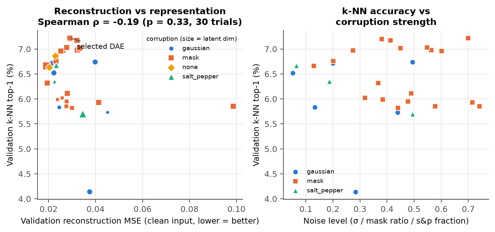
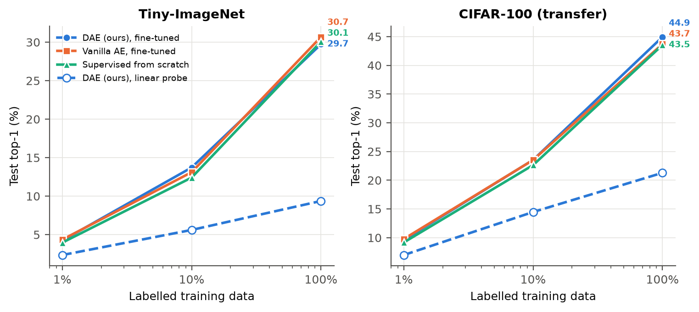
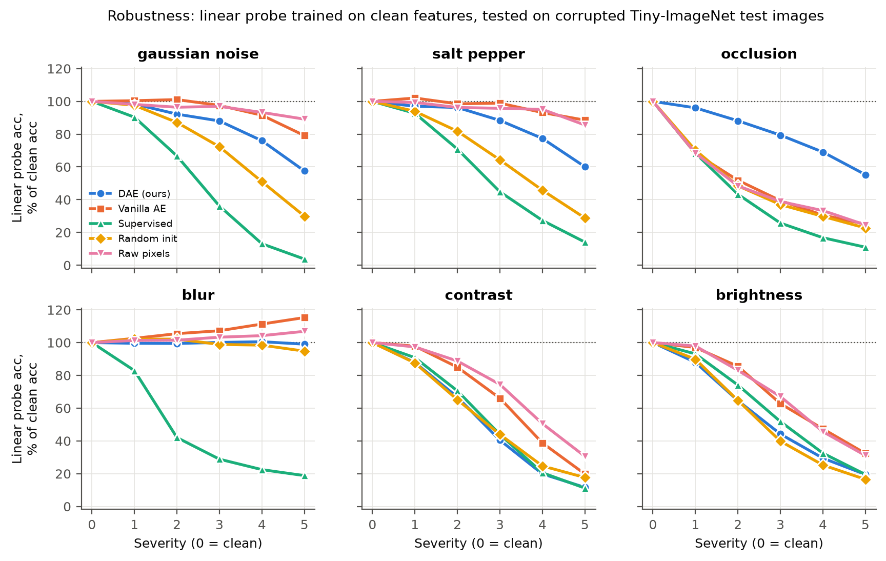
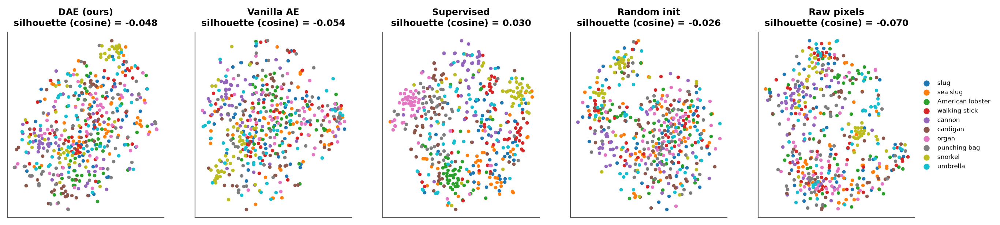
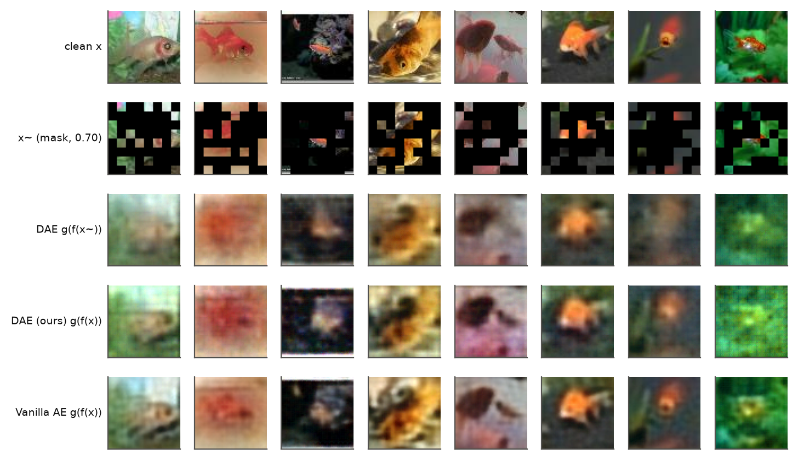
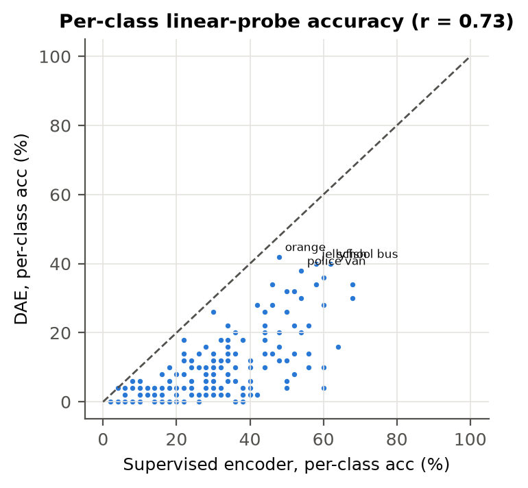
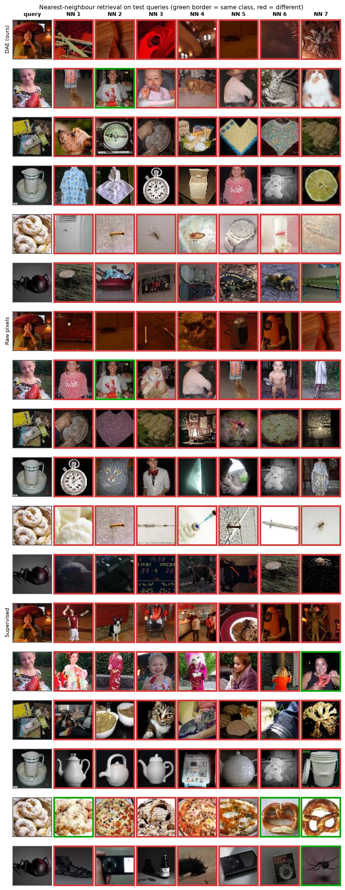

Summary. A denoising autoencoder (DAE) with 70% block masking, tuned by validation k-NN, gives a bottleneck representation that beats every unsupervised baseline on both frozen protocols and both datasets, but by only 1–3 points; it is far below a supervised encoder, does not help fine-tuning, and its conv features are no better than random ones. Its clearest advantage is robustness to occlusion.
Data and splits. Tiny-ImageNet (200 classes, 64×64). Train = 90k images (450/class);
validation = 50 images/class held out of the official train split, used for all tuning and model
selection; test = the official labelled val set (10k), used only for final numbers. Images come from the
dataset's original zip, identical to zh-plus/tiny-imagenet (Hugging Face was blocked on our network).
Labels never enter pre-training. Transfer: CIFAR-100 (45k train / 5k val / 10k test), resized
32→64 (bilinear, antialiased). Label subsets 1/10/100% are class-balanced (5/45/450 per class), drawn once with
seed 42 and identical for every model.
Code. part_a/ starts as a copy of the course's lec5/ and extends its pipeline:
lec5's AutoEncoder gains the corruption step (A1), its EncoderClassifier does the linear
probe and fine-tuning, and SupervisedEncoder is the supervised baseline. Every run is the course
train.py with its own config file.
Model (A1). Encoder fθ = the course small encoder adapted to RGB 64×64: Conv(3→32, s2)–ReLU–Conv(32→64, s2)–ReLU–Flatten–Linear(16384→d). Light decoder gφ = Linear(d→16384)–ReLU–ConvT(64→32, s2)–ReLU–ConvT(32→3, s2), linear output. Pixels x ∈ [0,1]; the encoder sees the normalized corrupted image. Loss:
Corruptions q: Gaussian noise (std σ), block masking (each 8×8 block zeroed with probability p) and salt-and-pepper (fraction p of pixels set to 0/1); q = identity gives the plain AE. AdamW, cosine schedule, batch 256, 16-bit mixed precision; the checkpoint with the best validation k-NN accuracy is kept.
Tuning (A2). Optuna TPE (seed 42), 30 trials, in a proxy setting (150 images/class, 15 epochs); objective = validation k-NN top-1 with the full 90k train split as memory bank; validation reconstruction MSE (on clean inputs) is logged for every trial. The corruption type is a hyperparameter, so the search also covers the plain AE. The DAE is the best trial with a corruption; the plain AE uses the same settings with no corruption. Final models are trained in the full setting (90k images, 40 epochs).
| Hyperparameter | Search range | Selected (DAE) | Fixed settings | Value |
|---|---|---|---|---|
| corruption | {gaussian, mask, salt-pepper, none} | mask | batch size | 256 |
| noise level (σ or p) | σ∈[.05,.5]; pmask∈[.1,.75]; ps&p∈[.05,.5] | p = 0.70 | epochs (proxy / final) | 15 / 40 |
| latent dim d | {64, 128, 256, 512} | 256 | supervised encoder | fine-tune recipe, 20 ep |
| learning rate | [1e-4, 3e-3], log | 8.5e-4 | fine-tune (all weights) | AdamW 1e-3, wd 5e-4, crop+flip |
| weight decay | [1e-6, 1e-2], log | 3.7e-3 | fine-tune epochs 1/10/100% | 100 / 40 / 20 |
Evaluation protocol. k-NN: ℓ2-normalized h, cosine similarity, k = 20, similarity-weighted vote, bank = full labelled train split. Linear probe: fθ frozen, features standardized, one linear layer trained with cross-entropy (AdamW, 30 epochs, ≥1500 steps), weight decay ∈ {0, 1e-4, 1e-3} chosen on validation. Fine-tuning: all weights plus a linear head on 1/10/100% of the labels; the epoch is chosen on validation top-1. All protocols run on Tiny-ImageNet and CIFAR-100; we report test top-1/top-5. Baselines: random-init encoder (frozen), plain AE, supervised encoder trained from scratch on the same label subsets (fine-tuning) and, for the frozen protocols, the encoder trained with 100% of the labels (an upper reference); raw pixels (16×16 average-pooled, 768-d) as an extra sanity baseline. All models share the architecture, d = 256, the splits and seed 42.

Figure 1. All 30 tuning trials (proxy setting). Left: validation reconstruction MSE vs validation k-NN top-1 (Spearman ρ = −0.19, p = 0.33). Right: k-NN vs corruption strength. Best per corruption: mask 7.22%, none 6.86%, Gaussian 6.74%, salt-and-pepper 6.67%.
No. Across trials, lower reconstruction error does not predict higher k-NN accuracy (Fig. 1). The same holds within and between the final runs: the DAE's k-NN peaks at epoch 6 (7.3%) and drifts to 6.9% while its reconstruction MSE keeps falling (0.020 → 0.015), and the plain AE reconstructs better than the DAE (MSE 0.012 vs 0.020) yet has the worse representation (6.3% vs 7.3%). Reconstruction rewards keeping colour and layout, which is not what separates the classes. Masking holds the 8 best trials.
h = the 256-d bottleneck (Linear output): the representation the course encoder defines and the input of the fine-tuning head, fixed before seeing results. We also ran the frozen protocol on the last conv map, average-pooled to 4×4 (1024-d; Table A1). For every unsupervised encoder it is better (Tiny-ImageNet linear probe: DAE 9.4 → 14.5, AE 7.3 → 17.6, random 7.1 → 15.5); only the supervised encoder is better at h on its own task (29.0 vs 27.5). The bottleneck throws class information away; see Section 3.
| Test top-1 / top-5 (%) | Tiny-ImageNet | CIFAR-100 (transfer) | |||||||
|---|---|---|---|---|---|---|---|---|---|
| k-NN | LP 1% | LP 100% | FT 10% | FT 100% | k-NN | LP 100% | FT 10% | FT 100% | |
| DAE (ours) | 7.1 / 18.1 | 2.3 / 8.6 | 9.4 / 24.9 | 13.7 / 33.0 | 29.7 / 55.1 | 20.1 / 42.8 | 21.3 / 45.5 | 23.5 / 50.5 | 44.9 / 73.5 |
| Plain AE | 5.8 / 15.8 | 2.1 / 8.2 | 7.3 / 20.7 | 13.1 / 31.0 | 30.7 / 55.5 | 18.2 / 39.7 | 18.9 / 41.0 | 23.5 / 49.1 | 43.7 / 72.9 |
| Random init (frozen) | 4.4 / 12.4 | 2.1 / 7.7 | 7.1 / 20.1 | – | – | 17.3 / 38.6 | 19.9 / 43.6 | – | – |
| Raw pixels | 6.1 / 15.5 | 2.1 / 8.2 | 7.6 / 20.1 | – | – | 18.6 / 40.9 | 18.9 / 41.5 | – | – |
| Supervised from scratch | – | – | – | 12.4 / 30.0 | 30.1 / 55.3 | – | – | 22.6 / 47.7 | 43.5 / 72.9 |
| Supervised, frozen (100% labels) | 27.0 / 50.0 | 13.6 / 33.7 | 29.0 / 53.9 | – | – | 34.1 / 60.4 | 37.8 / 67.0 | – | – |
Table 1. LP = linear probe, FT = fine-tuning, with the given fraction of labels; best unsupervised result in bold. The frozen supervised encoder saw all Tiny-ImageNet labels: an upper reference, not a competitor. Remaining columns: Appendix.

Figure 2. Test top-1 vs label fraction. Fine-tuned DAE, plain AE and supervised-from-scratch are within ~1 point at every fraction; the frozen DAE + linear probe (dashed) is far below.

Figure 3 (bonus). Linear probe trained on clean features, tested on corrupted test images (6 corruptions × 5 severities), as % of clean accuracy.
Label efficiency. Pre-training gives no measurable head start when all weights are trained: at 10% labels the DAE leads supervised-from-scratch by 1.3 (Tiny-ImageNet) and 0.9 points (CIFAR-100); at 1% and 100% the order changes, and all gaps are ≤1 point, within seed variation (Tiny-ImageNet 1%: 4.2 / 4.3 / 4.0; 100%: 29.7 / 30.7 / 30.1 for DAE / AE / scratch).
Bonus robustness test: test-time corruptions. Weakness probed: whether h encodes the object or the exact pixels, i.e. whether a classifier trained on clean features still works when the input changes in ways that do not change the class. Why it is fair: probe, test images and corruption noise (fixed seed) are identical for every model, no probe sees corrupted images, results are relative to each model's clean accuracy, and severities follow ImageNet-C [Hendrycks & Dietterich, 2019]. Result: under occlusion (10–50% of 8×8 blocks dropped) the DAE keeps 78% of its accuracy on average vs 43% (AE), 43% (pixels) and 33% (supervised), and is best even in absolute terms at the highest severity (5.2% vs 3.2% supervised, 1.8% AE). This test removes the same 8×8 blocks the DAE was trained to fill in, so it shows robustness to its own training corruption, not to an unseen shift, and that robustness does not carry over to the other five corruptions. The price is lower tolerance to pixel noise (Gaussian 82% vs AE 94%) and to global photometric changes (contrast 45% vs 61%, brightness 49% vs 65%). The supervised encoder collapses under blur and noise (39–42%): it relies on high-frequency texture.
Better than what, and by how much? On h, the DAE beats the plain AE (+1.3 k-NN, +2.1 LP on Tiny-ImageNet; +1.9 / +2.4 on CIFAR-100), raw pixels (+1.0 / +1.8) and the random encoder (+2.7 / +2.3), so masking adds something the plain reconstruction objective does not. In absolute terms the representation is weak: 7.1% k-NN is 14× chance but a quarter of the supervised encoder's 27.0%, and the gain over raw pixels is about one point. Two results limit the claim further. (i) Fine-tuning erases the difference: all initialisations end within ~1 point. (ii) On the pooled conv features (Table A1) the DAE has no advantage: the plain AE is best (LP 17.6 vs 14.5) and even a random conv layer beats the DAE (15.5). What masking teaches is concentrated in the learned Linear bottleneck, which must summarize the whole image from 30% of it; the conv layers below it are not better than random filters, which are known to give strong features when read out by a high-dimensional linear probe.
Do the protocols rank the models the same way? The two frozen protocols agree: on Tiny-ImageNet k-NN and the linear probe give the identical order over all five models (Kendall τ = 1.0: supervised > DAE > pixels > AE > random). On CIFAR-100 they agree less (τ = 0.4) because the random encoder overtakes pixels and the AE under the linear probe: a learned linear readout can exploit many weak random features that cosine k-NN treats as noise. Fine-tuning ranks DAE, AE and supervised differently (τ = −0.33 against both frozen protocols). Fine-tuning changes every weight, so it measures the initialisation, not the representation; after 20–100 epochs the initialisation is largely forgotten and the remaining gaps (≤1 point) are within seed noise.
Where does it fail? Classes: with the linear probe 33 of 200 classes get 0% test accuracy (k-NN: 41). The best classes have a distinctive colour or shape on a uniform background (orange 42%, school bus 40%, jellyfish 40%, police van 38%); the worst are fine-grained or thin objects (ox, bighorn, Labrador retriever, standard poodle, dumbbell, syringe). Per-class accuracy correlates with the supervised encoder's (r = 0.73), so the DAE succeeds on the "easy" classes, not on different ones. Corruptions: contrast and brightness changes and strong pixel noise (Fig. 3). Domain: the transfer gap to CIFAR-100 is similar to Tiny-ImageNet (+2.4 LP over the AE), so the representation is not specific to the source domain, but it stays far from supervised features (21.3 vs 37.8).
Extra evidence. Nearest-neighbour retrieval (Appendix, Fig. A1) shows why: the DAE's neighbours match the query's colour and layout (a red-lit scene retrieves other red images) and look much like the raw-pixel neighbours, while the supervised encoder retrieves teapots for a pitcher and pretzels for pretzels. t-SNE of 10 classes (Fig. 4) agrees: silhouette (cosine) is −0.048 for the DAE, −0.054 AE, −0.070 pixels, and only the supervised encoder is positive (0.030); the one tight DAE cluster is snorkel, a class defined by its blue-water background.

Figure 4. t-SNE of validation features h for 10 random classes; titles give the cosine silhouette score in the full feature space. Only the supervised encoder forms class clusters.
Limitations and next steps. One seed per configuration (differences < 1 point are not conclusive);
tuning in the proxy setting selected an early-peaking model; a two-layer encoder with a linear bottleneck limits
everything downstream. Next we would (1) report h from the pooled conv map or a deeper encoder (the
conv4 encoder is implemented), (2) repeat the final runs with 3 seeds, (3) try a masking objective
closer to a context encoder (larger contiguous masks, loss only on masked pixels), and (4) compare with SimCLR in Part B
on exactly these splits and protocols.
Vincent, Larochelle, Bengio & Manzagol (2008). Extracting and composing robust features with denoising autoencoders. ICML.
Pathak, Krähenbühl, Donahue, Darrell & Efros (2016). Context encoders: feature learning by inpainting. CVPR.
Hendrycks & Dietterich (2019). Benchmarking neural network robustness to common corruptions and perturbations. ICLR.
Akiba, Sano, Yanase, Ohta & Koyama (2019). Optuna: a next-generation hyperparameter optimization framework. KDD.
Table A1. Frozen protocols on the last conv map, average-pooled to 4×4 (1024-d), instead of h
(configs/evaluate_*_conv.yaml). Test top-1 / top-5 (%).
| Encoder | Tiny-ImageNet | CIFAR-100 | ||||||
|---|---|---|---|---|---|---|---|---|
| k-NN | LP 1% | LP 10% | LP 100% | k-NN | LP 1% | LP 10% | LP 100% | |
| DAE | 9.4 / 22.7 | 3.5 / 11.5 | 7.6 / 21.1 | 14.5 / 33.6 | 23.7 / 46.9 | 8.2 / 24.4 | 18.5 / 41.8 | 30.3 / 59.2 |
| Plain AE | 10.1 / 23.4 | 4.5 / 13.9 | 9.1 / 24.6 | 17.6 / 38.1 | 24.9 / 48.6 | 9.9 / 26.9 | 20.7 / 44.9 | 33.1 / 62.0 |
| Random init | 7.7 / 19.3 | 3.7 / 11.9 | 7.6 / 22.0 | 15.5 / 34.2 | 20.5 / 41.9 | 8.8 / 25.4 | 18.7 / 41.6 | 31.0 / 58.4 |
| Supervised (frozen) | 20.0 / 38.9 | 7.9 / 22.0 | 17.3 / 37.5 | 27.5 / 51.5 | 28.9 / 54.5 | 13.1 / 31.8 | 27.3 / 54.3 | 41.7 / 70.1 |
Remaining Table 1 columns (test top-1 / top-5, %). Tiny-ImageNet LP 10%: DAE 5.6 / 16.8, AE 4.4 / 13.7, random 4.2 / 13.6, pixels 4.0 / 13.5, supervised (frozen) 24.4 / 48.6. FT 1%: DAE 4.2 / 12.8, AE 4.3 / 13.1, scratch 4.0 / 12.3. CIFAR-100 LP 1%: DAE 7.0 / 20.9, AE 6.9 / 19.7, random 6.3 / 19.5, pixels 7.2 / 20.3; LP 10%: 14.5 / 34.4, 12.3 / 30.8, 13.6 / 34.0, 12.3 / 31.7; FT 1%: DAE 9.6 / 26.9, AE 9.8 / 27.6, scratch 9.2 / 25.6.

Figure A2. Clean x, masked x̃ (p = 0.70), DAE reconstruction from x̃ and from x, and the plain AE's reconstruction. The DAE outputs a blurrier colour-and-layout summary; the AE keeps more detail.

Figure A3. Per-class linear-probe test accuracy on h, DAE vs supervised encoder (r = 0.73); 33 classes are at 0% for the DAE.

Figure A1. Seven nearest neighbours (cosine on h) in the train split for six random test queries, for the DAE, raw pixels and the supervised encoder. Green = same class as the query.